部署
OpenClaw 接入教程
OpenClaw 图文部署详细指南：按上传 Word 文档从安装、模型配置、技能选择、安全审计到附录完整整理。
OpenClaw部署详细指南（图文版）
项目地址：https://github.com/openclaw/openclaw。这部分按你上传的 Word 文档完整整理，保持当前卡片式排版和图文步骤。注意：你上传的文档写的是 https://ciyuan.fast/v1，但 OpenClaw 安装向导这里应填 https://ciyuan.fast，不要加 /v1。
一、推荐安装方式：官方一键脚本
Windows 系统建议在 WSL2 下运行 OpenClaw。Mac、Linux、WSL2 用户使用官方一键脚本最省事，脚本会自动检测环境、安装 Node.js（如果缺失）并启动初始配置引导。
# Mac / Linux / WSL2
curl -fsSL https://openclaw.ai/install.sh | bash如果 Mac 出现 Homebrew not found，先安装 Homebrew 并配置环境变量。
/bin/bash -c "$(curl -fsSL https://raw.githubusercontent.com/Homebrew/install/HEAD/install.sh)"
echo 'eval "$(/opt/homebrew/bin/brew shellenv)"' >> /Users/admin/.zprofile
eval "$(/opt/homebrew/bin/brew shellenv)"
brew --versionWindows PowerShell 用户执行：
iwr -useb https://openclaw.ai/install.ps1 | iex安装文档：https://docs.openclaw.ai/install。
二、安装配置细节
- 开始安装后选择 yes。
- 选择快速开始。
- 选择模型厂商：自定义提供商（ciyuan.fast）。
- 填入 URL：https://ciyuan.fast。OpenClaw 安装向导里填写 URL 时不要加 /v1，填写 https://ciyuan.fast，不是 https://ciyuan.fast/v1。
- 填入你的 API Key。
- 选择 OpenAI 格式。
- 填入模型名称，例如
gpt-5.3-codex；如按 Codex 教程则可用gpt-5.5。 - 后面两个字段相当于代号，可以按向导提示填写。
- 连接 App 的步骤可以先跳过。
- 进入技能选择界面，不知道选什么时先按图选择推荐项。
- 包管理器推荐 npm。
- 生图、笔记、语音对话等额外 API，不确定时先全部选 no；开通后再选 yes。
- 最后选择 restart，进入对话框后先发一句简单消息测试。
三、部署后的验证与日常命令
openclaw doctor # 检查配置问题
openclaw status # 网关状态
openclaw dashboard # 打开浏览器用户界面常用指令：openclaw dashboard 打开可视化面板，openclaw onboard 重新配置，openclaw gateway restart 重启，openclaw update 升级，openclaw status 检查状态，openclaw doctor 诊断配置健康度。
四、安全：先最小权限，再逐步扩大
定期运行安全审计，尤其是在更改配置或暴露网络接口后。它会标记网关身份验证暴露、浏览器控制暴露、提升的允许列表、文件系统权限等常见漏洞。
openclaw security audit
openclaw security audit --deep
openclaw security audit --fix
openclaw security audit --jsonOpenClaw 既是一款产品，也是一项实验。不存在“绝对安全”的设置。你要先想清楚：谁可以和机器人对话？机器人被允许在哪里行动？机器人可以触摸哪些东西？
高危命令：赋予 OpenClaw 全部权限，慎重执行。
openclaw config set tools.profile full
openclaw gateway restart五、其他扩展
- Claw 与飞书集成：可在连接 App 阶段或 dashboard 中补充飞书凭证。
- 自定义 skill：把你的脚本、工具、业务流程包装成 OpenClaw 可调用能力。
附录 1：技能详情
核心扩展与视觉自动化：mcporter 是 MCP 桥接器；peekaboo 是 Mac 视觉自动化工具；clawhub 是官方技能包中心；model-usage 用于监控 Token 和账单。
凭证与系统操作：1password 安全提取密码和 API Key；camsnap 调用 Mac 摄像头。
通讯与信息处理：himalaya 是终端邮件客户端；imsg / wacli 可绑定 iMessage 或 WhatsApp。
效率笔记与日程监控：obsidian、bear-notes、apple-notes 读写笔记；things-mac、apple-reminders 管理任务；blogwatcher 监控博客和 RSS。
多媒体与特定领域：video-frames 视频抽帧；nano-pdf 解析 PDF；goplaces 接 Google Places；openai-whisper 语音转文字；gemini 处理多模态或复杂推理。
附录 2：可能需要接入的其他 API Key
| 能力 | 环境变量 | 场景 |
|---|---|---|
| goplaces | GOOGLE_PLACES_API_KEY | 地理位置、店铺信息、评分和路线规划。 |
| nano-banana-pro | GEMINI_API_KEY | 图像生成与编辑。 |
| notion | NOTION_API_KEY | 读写 Notion 工作区。 |
| openai-image-gen | OPENAI_API_KEY | 图像生成。 |
| openai-whisper-api | OPENAI_API_KEY | 语音识别。 |
| sag | ELEVENLABS_API_KEY | 拟真人声合成。 |
附录 3：组成完整 Claw 大脑的脑区
boot-md 类似启动脚本，每次网关启动读取并执行 BOOT.md。
bootstrap-extra-files 用于上下文预加载，把项目代码或日志注入初始上下文。
command-logger 集中记录 Agent 执行过的 Shell 命令，方便追溯。
session-memory 把短期会话记忆沉淀为长期记忆。
补充图文步骤
密钥创建通用步骤
先打开词元.fast 并登录，进入控制台的令牌管理/API Key 页面。点击添加令牌或创建密钥，名称可以写当前工具名。创建成功后立刻复制密钥，后面所有工具里的 API Key、Token、访问令牌都粘贴这一串内容。

OpenClaw 图文步骤 1
打开安装向导，Windows 用户建议先进入 WSL2；Mac、Linux、WSL2 执行官方一键脚本。
OpenClaw 图文步骤 2
选择 yes 继续安装。
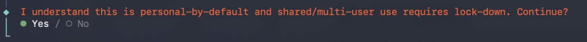
OpenClaw 图文步骤 3
选择快速开始。
OpenClaw 图文步骤 4
选择自定义提供商，把词元.fast 当作兼容模型网关接入。
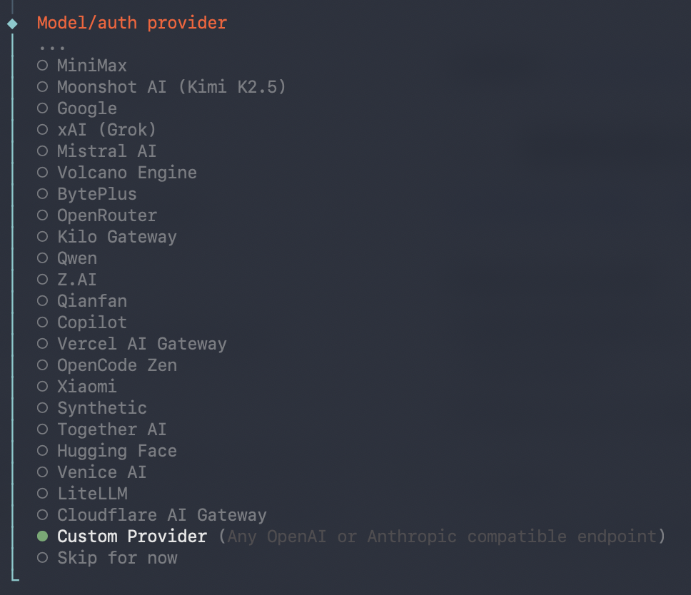
OpenClaw 图文步骤 5
填写 URL：OpenClaw 这里填 https://ciyuan.fast，不要加 /v1。
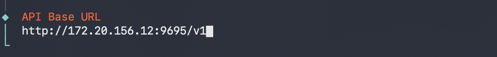
OpenClaw 图文步骤 6
粘贴词元.fast API Key。
OpenClaw 图文步骤 7
选择 OpenAI 格式。
OpenClaw 图文步骤 8
填写模型名称，例如 gpt-5.3-codex 或控制台可用模型。
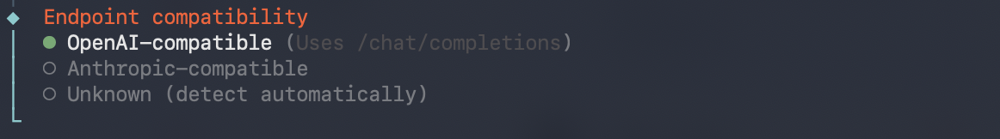
OpenClaw 图文步骤 9
连接 App 的步骤可以先跳过。
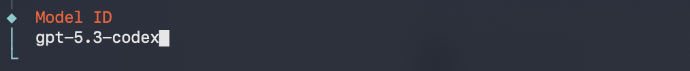
OpenClaw 图文步骤 10
选择官方技能，不确定时先选推荐技能。
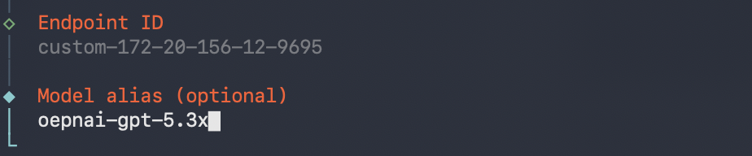
OpenClaw 图文步骤 11
包管理器推荐 npm。
OpenClaw 图文步骤 12
额外 API 能力不确定时先选 no。
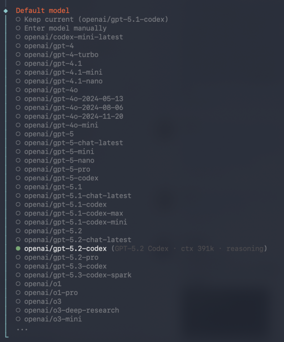
OpenClaw 图文步骤 13
如果已开通生图、笔记、语音等能力，可按需开启。
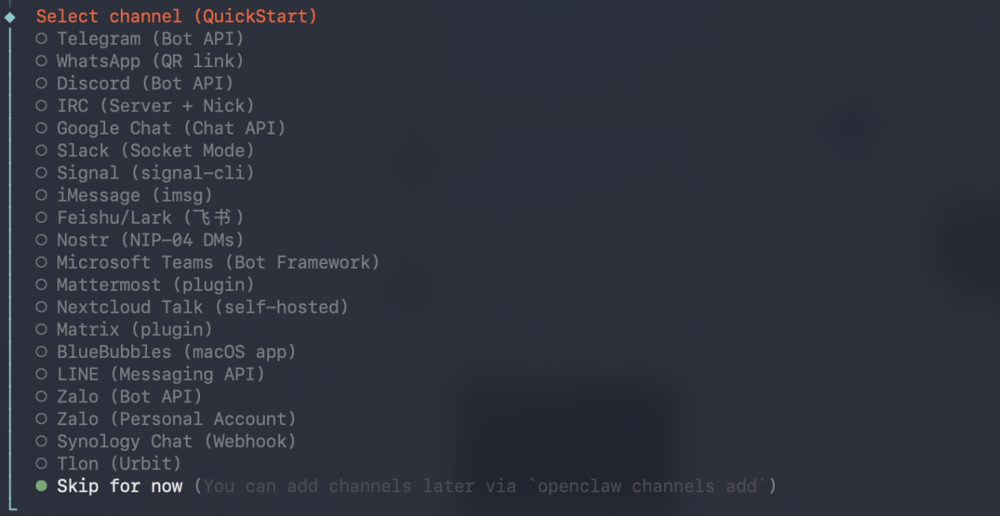
OpenClaw 图文步骤 14
确认配置并 restart。
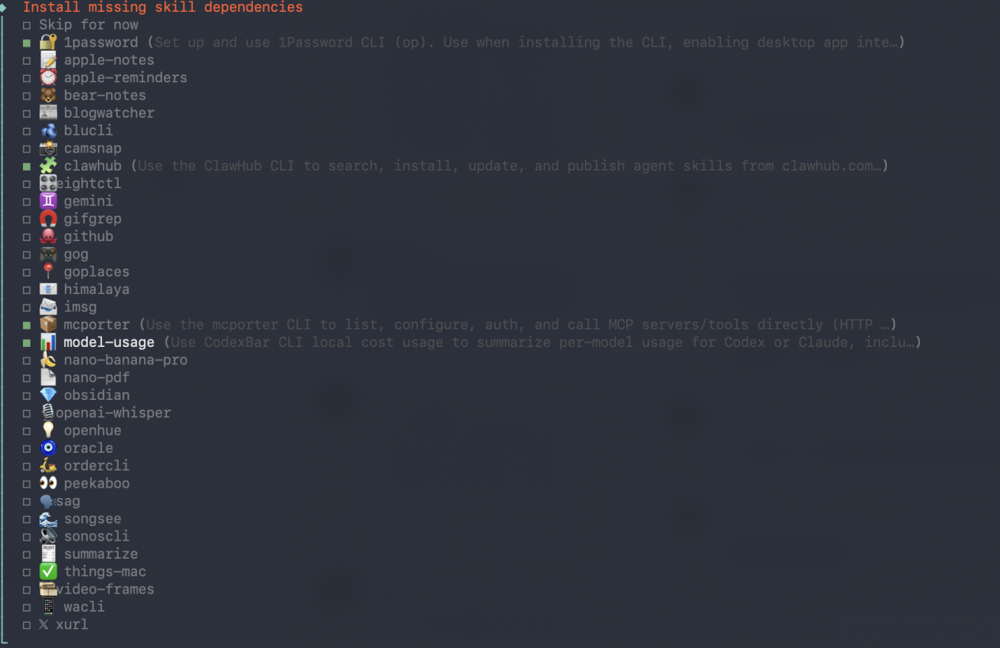
OpenClaw 图文步骤 15
进入对话框后先测试一句简单消息。
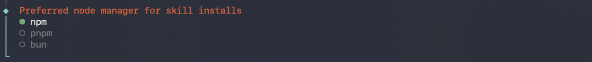
OpenClaw 图文步骤 16
检查 dashboard 是否能正常打开。
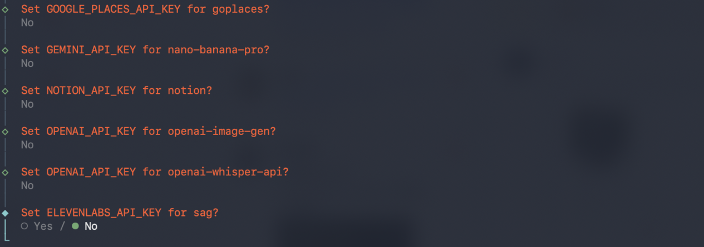
OpenClaw 图文步骤 17
检查状态与网关连接。
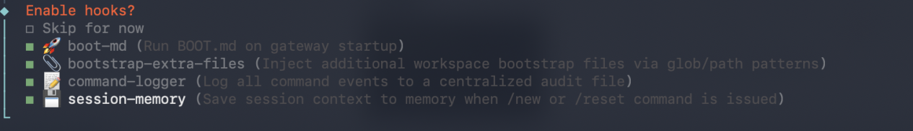
OpenClaw 图文步骤 18
查看技能和应用连接状态。
OpenClaw 图文步骤 19
确认模型回复可用。
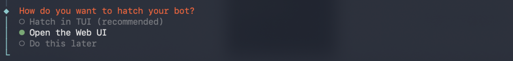
OpenClaw 图文步骤 20
完成部署后按日常命令维护。
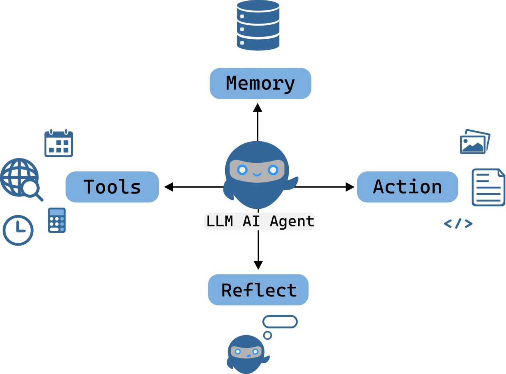